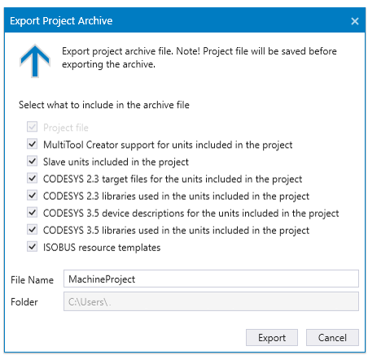

MultiTool Creator project configuration file is saved in XML format and the file has a .net file extension. The project configuration file includes both network configuration and unit configurations. This topic describes how to create a new project and opening and saving an existing project.
With this function you can create a new MultiTool Creator project. The given project name will be used for project folder and configuration file name.
To create a project:
1. Select File > New Project
2. Give the project a name and check the file location. The given name can include characters from A to Z, an underline character and numbers from 0 to 9. The maximum length is 26 characters.
3. Select Create Project
With this function you can open an existing MultiTool Creator project.
To open a project:
1. Select File > Open Project
2. Browse to project location, select the configuration and select Open.
The configuration file for the network and for the devices then loaded.
If the project is opened in archive format, then MultiTool Creator installs any missing components from the archive file.
To save the project select File > Save or select the Save icon in main window.
To save the project with a different name:
1. Select File > Save as...
2. Give the project a new name and check the file location.
3. Select Save
To export the project archive:
1. Select File > Export Project Archive
2. Select which files are included in the archive

3. Give the archive a name
4. Select Save
The archive file format .mtarchive includes, for example, the device descriptions and libraries of all the programmable units in the project. For slave units, the eds files are also included in the archive. When opening an .mtarchive file, MultiTool Creator can install the devices and libraries to CODESYS and the eds files to MultiTool Creator device repository.